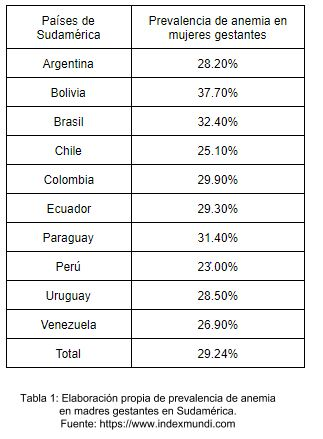

Entregable 1
Planteamiento del problema-Perfil del cliente-Propuesta de valor-Encaje de modelo
Planteamiento del problema
1.- Definir el efecto
La anemia es un factor de riesgo ligado a la mortalidad infantil, a la mortalidad materna y a la mortalidad perinatal. [1] Contribuye a la alta tasa de partos prematuros y bajo peso al nacer, defensas bajas, cansancio constante y palidez, lo que trae limitaciones en su vida cotidiana; taquicardias, arritmia, mareos y dolor de cabeza. Además, la menstruación se vuelve anormal (ausencia de períodos o excesivo sangrado).
2.- Medir el efecto
Para el 2017, 21% de mujeres entre 15 a 49 años presentan anemia, de las cuales el 29,6% se encontraba en periodo de gestación y otro 23,3% se encontraba en periodo de lactancia. De las mujeres en gestación, el 21,4% poseen anemia leve, y un 8.1%. Este estadísticas nos muestran un retroceso en cuanto a este problema de salud pública debido a que para el año 2012, para este grupo etario se observa un 17.7% de prevalencia notándose así un aumento de 3.3% a lo largo de 5 años. [2]
En cuanto a niños, el 44% de niños tiene anemia en el Perú. Las regiones más afectadas son la sierra y selva, donde el 51.8% y 51,7%, respectivamente, de niños menores de 3 años tiene anemia. La costa presenta 36.7%. En tanto, Puno lidera las provincias con los registros más altos (75.9%), luego están Loreto (60.7%), Pasco (60.3%), Huancavelica (58.1%) y Ucayali (57.1%), por mencionar algunos. [3]
Como se menciona en datos anteriores, el Perú cuenta con alrededor de 29.3% de prevalencia en mujeres embarazadas en el año 2017. Para el año 2011 presentamos la menor prevalencia en Sudamérica con un 23% (Tabla 1). Estas estadísticas proporcionadas por la OMS difieren con las dadas por el Ministerio de Salud dadas el mismo 2011 en donde muestra que la prevalencia es de 28%. Otros países como Estados Unidos presenta 16.6%, México con 21%, España 25%. [4]
4.- Cuantificar el impacto
La futura productividad de un niño con anemia se ve deteriorada, la productividad de un adulto también se ve comprometido y los gastos usados para la repitencia y atención de partos grupos pueden costarle al Estado del 0,5-06 % (2777 millones de soles dro este problema puede ser arreglado si se ejecuta el 0,01% en un buen plan, según el estudio de el PBI) de Lorena Alcázar [1]. En cuanto a madre gestantes, se utilizó 8 237 540 soles para el tratamiento preventivo y 4 719 083 soles para la rehabilitación terapéutica (Tablas 2 y 3). [5]
Perfil del cliente (mujeres gestantes)
A.- Trabajos del cliente
El principal trabajo de una mujer gestante es asegurarse de tener un embarazo adecuado para el correcto desarrollo del bebé. Este trabajo se mejora a través de los controles médicos realizados por un ginecólogo y demás especialistas.
Su segunda labor, que deriva de la primera, es velar por la salud de su propio organismo (ej. cuidando su nutrición), ya que la salud y formación del bebé depende directamente de la salud de la madre.
Además, las madres gestantes que son amas de casa y no cuentan con un servicio de limpieza, desempeñan trabajos funcionales en sus hogares que implican actividad física, de leve/mediana intensidad (actividades rutinarias como comprar alimentos, cocinar de pie, limpiar, etc.).
Por otro lado, las madres gestantes también tienen los trabajos personales de satisfacer los antojos propios del embarazo y prepararse para el cuidado postnatal del bebé.
B.- Alegrías del cliente
La principal alegría de una mujer gestante es saber que lleva un embarazo estable y que tendrá un bebé saludable. Así como recibir noticias del estado de su bebé y que su desarrollo sea óptimo.
También, una alegría esperada de las madres gestantes es el recibir un trato preferencial en su entorno durante el periodo de embarazo.
Además, el poder satisfacer todos sus antojos es considerada una alegría esperada.
Asimismo, otra alegría emocional común es el sumar un nuevo integrante a la familia o el mismo hecho de estar gestando.
Finalmente, una alegría inesperada sería el llevar un embarazo sin complicaciones comunes como náuseas, dificultades para dormir, etc.
Las potenciales frustraciones de las madres gestantes, es el no tener los recursos suficientes para realizar todos los controles médicos o pagar un asesoramiento acerca de lo que debe comer durante su embarazo.
Mientras que el principal riesgo, es que el desarrollo o parto del bebé se vea afectado debido a una mala nutrición, actividades físicas o bajo sistema inmune de la madre. Por ejemplo, el bebé podría desarrollar anemia si la madre tiene una dieta baja en hierro y ácido fólico.
Algunas frustraciones secundarias pueden ser que no satisfagan sus antojos o no reciban un trato preferencial en su entorno o que las dietas recomendadas no sean de su agrado.
Las sensaciones no deseadas durante la gestación son las constantes náuseas, pérdida o ganancia excesiva de apetito, incomodidad para dormir, dolor en la espalda, etc.
Propuesta de valor
* Productos y servicios
Analizando los trabajos que realizan las mujeres embarazadas, se consideró como un servicio primordial la opción de mejorar las dietas que consumen las madres gestantes para que se garantice la correcta nutrición y desarrollo del feto .Y asimismo se propuso facilitar y recomendar qué actividades físicas pueden realizar durante el embarazo.
* Creadores de alegría
Se buscará brindar información constante sobre el estado de salud del feto y también crear un plan alimenticio que no solo sean ricas en macro y micronutrientes (como el hierro), sino que además sean del agrado de las gestantes. Además, este servicio será de bajo costo económico comparado con otros asesoramientos, por lo que será de fácil acceso.
* Aliviadores de frustaciones
Mediante lo mencionado en los creadores de alegría, nuestro servicio garantizará la correcta alimentación del bebé y así la madre no se preocupara tanto pensando en que su bebé tendrá un mal desarrollo y así tendrá más tiempo para pensar en el cuidado postparto. Además, el cambio de dieta y el programa de actividades físicas recomendadas ayudará a la mujer a aliviar las incomodidades físicas propias del embarazo sin afectar la integridad del bebé.
* Encaje
Haciendo un análisis en papel, el encaje entre el perfil del cliente y la propuesta de valor se da al verse cubierto dos de los principales trabajos del cliente, así como al satisfacerse las alegrías esenciales, evitar la principal frustración y reducir el mayor riesgo. Ello se evidencia, en que con la propuesta de valor la madre gestante tendrá una adecuada nutrición y por ende, un mejor estado de salud, lo cual se reflejará positivamente en el desarrollo de su hijo. Además, cumplirá con su trabajo de cuidar su salud y la del feto, al saber que actividades físicas puede o no realizar. Asimismo, se cumplirán con las alegrías de mantener un embarazo saludable, a la vez de que cumple con una dieta que también satisfaga sus antojos. Finalmente, se reducirá la frustración de no poder pagar un asesoramiento nutricional (por ser demasiados caros), se disminuirán las incomodidades físicas (como el dolor de espalda) y se reducirá el riesgo de que el feto sufra de anemia y que nazca prematuramente debido a una mala alimentación o incorrectas labores físicas por parte de la madre.
Referencias
[1] Alcázar, L (2012) Impacto económico de la anemia en el Perú
[2] INEI (2017) Encuesta Demográfica y de Salud Familiar. Recuperado de: https://www.inei.gob.pe/media/MenuRecursivo/publicaciones_digitales/Est/Lib1525/index.html
[3] INEI (2017) Encuesta Demográfica y de Salud Familiar. Recuperado de: https://proyectos.inei.gob.pe/endes/images/Indicadores_Resultados_PPR_Primer_Semestre_2017.pdf
[4] INDEXMUNDI (2011) Prevalencia de anemia en Mujeres embarazadas. Recuperado de: https://www.indexmundi.com/es/
[5] ENDES (2010) Recuperado de:http://www.inei.gob.pe/biblioineipub/bancopub/Est/Lib0843/index.htm
Lista de tablas
|  |
Referencias
[1] Alcázar, L (2012) Impacto económico de la anemia en el Perú
[2] INEI (2017) Encuesta Demográfica y de Salud Familiar. Recuperado de: https://www.inei.gob.pe/media/MenuRecursivo/publicaciones_digitales/Est/Lib1525/index.html
[3] INEI (2017) Encuesta Demográfica y de Salud Familiar. Recuperado de: https://proyectos.inei.gob.pe/endes/images/Indicadores_Resultados_PPR_Primer_Semestre_2017.pdf
[4] INDEXMUNDI (2011) Prevalencia de anemia en Mujeres embarazadas. Recuperado de: https://www.indexmundi.com/es/
[5] ENDES (2010) Recuperado de:http://www.inei.gob.pe/biblioineipub/bancopub/Est/Lib0843/index.htm